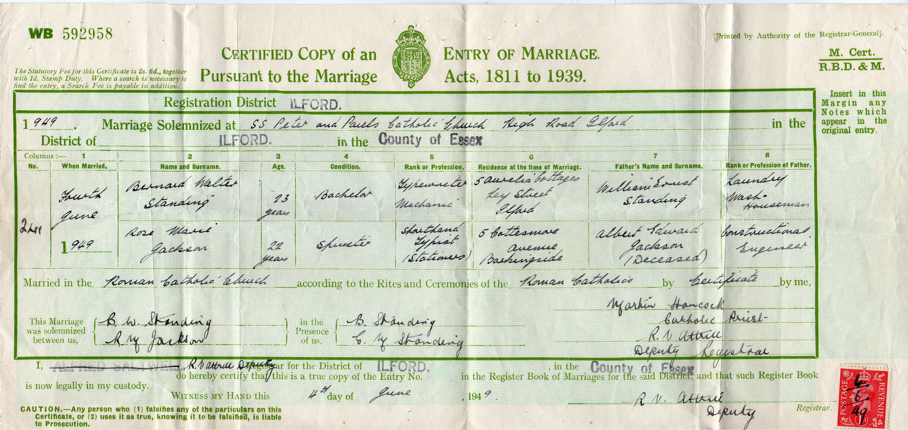
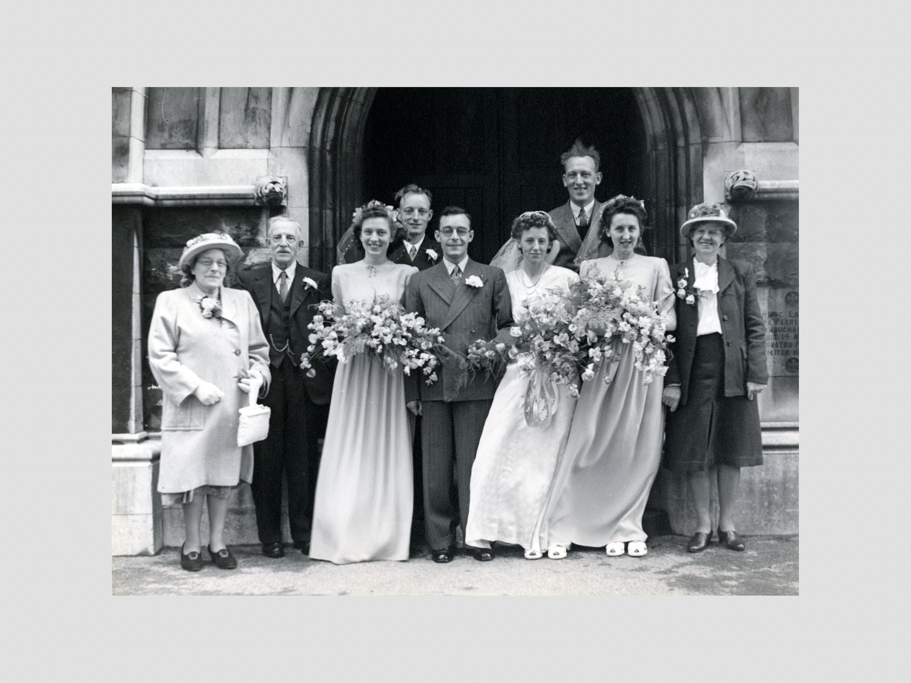

Rose Marie Standing (née Jackson) 1926 - 2006
[ Home ] | [ Calendar ] | [ Surnames Index ] | [ Census Index ] | [ Family History ]A shorthand typist, Rose Jackson, the wife of Bernard Walter Standing (the fourth cousin once-removed on the father's side of Nigel Horne), was born in Stepney, London, England on Oct 20, 19261,2,3 and. She married Bernard (a typewriter mechanic with whom she had 1 surviving child, Philip Andrew) in Ilford, London, England on Jun 4, 19494. In 1949, she was living at 5 Cottesmore Avenue, Barkingside, Essex, England.
She died on Sep 4, 2006 in Kidderminster, Worcestershire, England2.
Citations
- England & Wales births 1837-2006 - Findmypast
- England & Wales deaths 1837-2007 - Findmypast
- England & Wales, Birth Index: 1916-2005 Online publication - Provo, UT, USA: The Generations Network, Inc., 2008.Original data - General Register Office. England and Wales Civil Registration Indexes. London, England: General Register Office. © Crown copyright. Published by permission of the Cont
- England & Wales Marriages 1837-2005 - Findmypast
Media
Bernard Standing - Rose Jackson - marriage certifi

Marriage of Bernard Standing to Rose Jackson

Rose Marie Jackson

Rose Marie Jackson
Rose Marie Jackson
England & Wales marriages 1837-2008 Transcription - BMD-M-1949-2-AZ-001350-026
England & Wales deaths 1837-2007 - BMD/D/2006/9/87357153
England & Wales births 1837-2006 - BMD/B/1926/4/AZ/000639/020
England & Wales marriages 1837-2005 - BMD/M/1949/2/AZ/000738/022
Family Tree

Generated by ged2site. Last updated on Jun 11, 2024